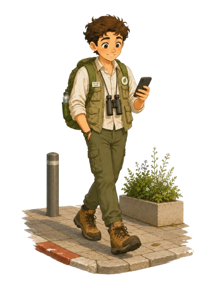
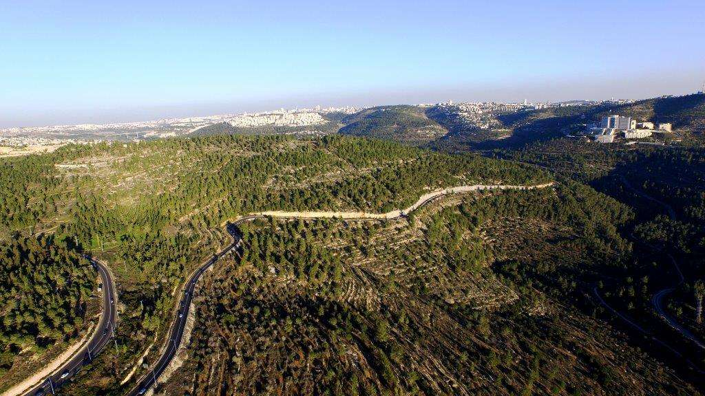
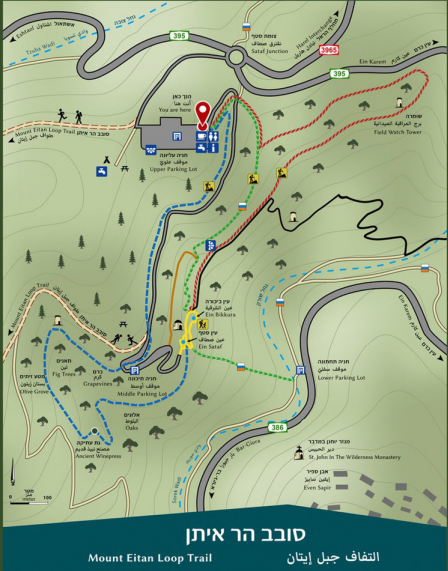

סטף והר איתן

- אורך המסלול: כ-2 ק"מ או כ-8 ק"מ
- משך הטיול: כ-2-4 שעות
- רמת קושי: בינונית
- אופי המסלול: מעגלי, כולל ירידה ועלייה
- אזור: הרי ירושלים
- מתאים ל: משפחות, חובבי הליכה ורוכבי אופניים
אזור הסטף נמצא במורדות הר איתן שבהרי ירושלים, בין נחל כיסלון לנחל שורק. זהו אזור ירוק ונעים עם מעיינות, ניקבות מים, טרסות עתיקות ושרידים של כפר קדום. אפשר לבחור מסלול קצר אל עין סטף או מסלול ארוך יותר סביב הר איתן.

קרדיט תמונה: החברה להגנת הטבע
הגעה ונקודת התחלה:
למסלול הקצר מגיעים לחניון הסטף העליון, ומשם יורדים בשביל המסומן אל אזור עין סטף.
למסלול הארוך יותר מתחילים מחניון הר איתן ומקיפים את ההר במסלול נופי מעגלי.
המסלול ומה רואים בדרך:
במסלול הקצר יורדים בין עצי אורן, תצפיות וטרסות חקלאיות עד עין סטף.
במסלול סביב הר איתן הולכים בקו גובה נוח יחסית, עם תצפיות אל הרי ירושלים,
נחל שורק, השפלה ומישור החוף. מומלץ להגיע עם מים, כובע ונעלי הליכה נוחות.

קרדיט מפה: קק"ל